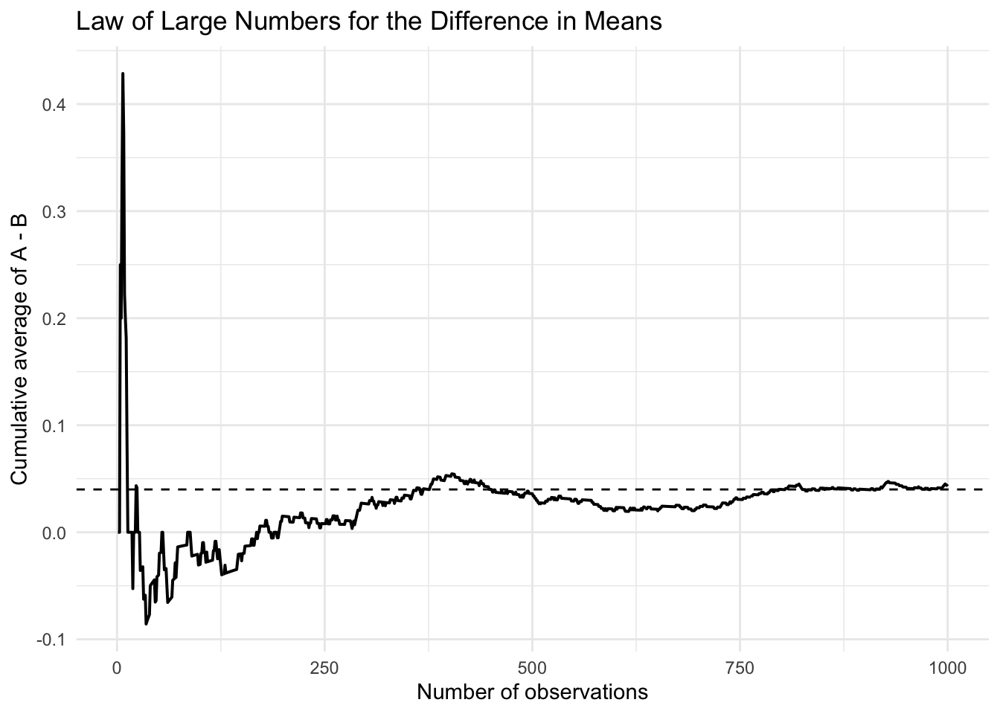
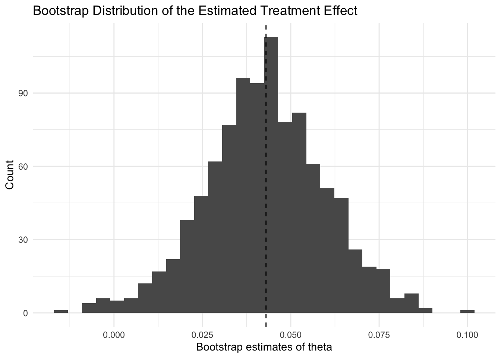
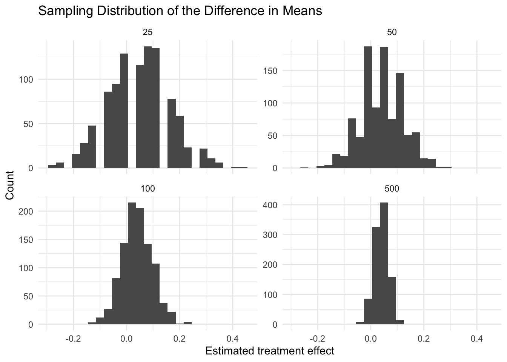

| Quantity | Value |
|---|---|
| Estimated sign-up rate for CTA A | 0.225 |
| Estimated sign-up rate for CTA B | 0.182 |
| Estimated treatment effect | 0.043 |
A/B Testing a Call to Action
Simulating Key Ideas from Classical Frequentist Statistics
Introduction
Suppose I run a website with a landing page that invites visitors to subscribe to a newsletter. A small design choice on that page is the wording of the call to action, or CTA. One version might say, “Sign up for our newsletter here!” while another says, “Stay up to date by signing up!” Even though the difference is only a few words, the language may affect whether a visitor chooses to subscribe.This also makes the simulation useful as a teaching example, because the results can be compared directly with the known data-generating process.
To learn which message works better, I can run an A/B test. In an A/B test, visitors are randomly assigned to one of two versions of a page or feature. Here, some visitors see CTA A and others see CTA B. Because the assignment is random, the two groups should be comparable on average, so any systematic difference in sign-up behavior can be attributed to the CTA itself rather than to pre-existing differences across visitors.
The goal of this post is to use a simulated A/B test to explain several core ideas from classical frequentist statistics. By working in a setting where the true probabilities are known, it becomes easier to see how estimation, uncertainty, hypothesis testing, and common pitfalls such as repeated peeking fit together.
The A/B Test as a Statistical Problem
From a statistical perspective, each visitor produces a binary outcome: either they sign up for the newsletter or they do not. That means each observation can be modeled as a draw from a Bernoulli distribution, where the parameter \(\pi\) represents the probability of signing up.
Because the CTA a visitor sees may influence that probability, it makes sense to define separate parameters for the two groups. Let \(\pi_A\) be the probability of signing up after seeing CTA A, and let \(\pi_B\) be the probability of signing up after seeing CTA B. For each person, the outcome is coded as 1 if they sign up and 0 otherwise.
The quantity of interest is the difference in sign-up rates between the two CTAs:
\[ \theta = \pi_A - \pi_B \]
If \(\theta > 0\), CTA A performs better. If \(\theta < 0\), CTA B performs better. If \(\theta = 0\), the two CTAs perform equally well.
A natural estimator for this quantity is the difference in sample means:
\[ \hat{\theta} = \bar{X}_A - \bar{X}_B \]
Because each observation is either 0 or 1, the sample mean in each group is just the observed sign-up proportion. In other words, \(\bar{X}_A = \hat{\pi}_A\) and \(\bar{X}_B = \hat{\pi}_B\). So the difference in means is also the difference in observed conversion rates.
Simulating Data
In a real experiment, the true sign-up probabilities would be unknown. That is exactly why we would run the A/B test in the first place. For this exercise, however, it is useful to choose the probabilities ourselves so that we know the truth and can evaluate how well our statistical tools recover it.
I set the true sign-up probability for CTA A to \(\pi_A = 0.22\) and the true sign-up probability for CTA B to \(\pi_B = 0.18\). This means the true treatment effect is
\[ \theta = \pi_A - \pi_B = 0.04 \]
So in the population, CTA A outperforms CTA B by 4 percentage points. Using these values, I simulated 1,000 visitors in group A and 1,000 visitors in group B, storing each observation as a 1 if the visitor signed up and 0 otherwise. These simulated data will be used throughout the rest of the analysis.
The sample summary is shown below.
In this particular simulation, the estimated sign-up rate for CTA A is 0.225 and the estimated sign-up rate for CTA B is 0.182. The estimated treatment effect is therefore 0.043. These sample values are not exactly equal to the true probabilities, which is exactly what we should expect in finite samples.
The Law of Large Numbers
The Law of Large Numbers says that as the sample size grows, the sample mean converges to the population mean. In the A/B testing context, that idea is crucial because our estimator \(\hat{\theta} = \bar{X}_A - \bar{X}_B\) is built from sample means. If each group is large enough, the sample proportions should settle down near their true values, and the estimated difference should get closer to the true treatment effect.
To illustrate this, I computed the element-wise difference between the simulated draws from groups A and B and then calculated the cumulative average of those differences. This running mean shows what the estimate looks like as more and more observations are included.

At the beginning of the figure, the running average is noisy because early estimates are based on very little information. A few unusual outcomes can move the estimate a lot when the sample is tiny. As the sample size grows, however, the running average becomes more stable and moves toward the true value of 0.04. This is the Law of Large Numbers in action: larger samples deliver more stable and more reliable estimates.
Bootstrap Standard Errors
An estimate by itself is not enough. We also want to know how much uncertainty surrounds it. One way to measure that uncertainty is with a standard error, which captures how much an estimator would vary across repeated samples.
The bootstrap provides a practical way to approximate this variability. The basic idea is to treat the observed sample as a stand-in for the population, repeatedly resample from it with replacement, and recompute the statistic of interest each time. The spread of those bootstrap estimates then approximates the sampling variability of the estimator.
In this analysis, I generated 1,000 bootstrap replications of the treatment effect. For each bootstrap sample, I resampled the observations from group A and group B separately and recalculated the difference in means. The standard deviation of those bootstrap estimates is the bootstrap standard error.

The bootstrap distribution is centered near the original sample estimate and shows the range of values that appear due to sampling variability. The bootstrap standard error is 0.0171, while the usual analytical standard error is 0.0180. These two values are quite close, which is reassuring. It suggests that both the resampling approach and the formula-based approach are telling a similar story about uncertainty in the estimate.
A 95% confidence interval based on the bootstrap standard error is shown below.
| Quantity | Value | |
|---|---|---|
| 4 | Bootstrap standard error | 0.0171 |
| 5 | Analytical standard error | 0.0180 |
| 6 | 95% CI lower bound | 0.0095 |
| 7 | 95% CI upper bound | 0.0765 |
This interval runs from 0.0095 to 0.0765. Because the entire interval lies above zero in this simulation, it suggests that CTA A outperforms CTA B.
The Central Limit Theorem
The Central Limit Theorem is one of the key reasons that classical inference works so well. It says that under fairly general conditions, the sampling distribution of a properly standardized sample mean becomes approximately normal as the sample size grows. Since our estimator is a difference in sample means, the same general logic applies here as well.
To demonstrate this idea, I repeatedly simulated the treatment effect estimate using different sample sizes: 25, 50, 100, and 500 observations per group. For each sample size, I generated 1,000 estimates and plotted their distributions.

The pattern is what the Central Limit Theorem predicts. When the sample size is small, the distribution is somewhat rough and dispersed. As the sample size increases, the distribution becomes more concentrated around the true value and also looks more bell-shaped. This matters because normal approximations are the foundation of confidence intervals and hypothesis tests. The theorem explains why those approximations become increasingly accurate in larger samples.
Hypothesis Testing
A common goal in an A/B test is to assess whether the observed difference could plausibly be explained by random chance alone. This leads to a hypothesis test.
The null hypothesis is that the two CTAs perform equally well:
\[ H_0: \theta = 0 \]
The alternative hypothesis is that the treatment effect is not zero:
\[ H_A: \theta \neq 0 \]
To evaluate the evidence against the null, I compute a z-statistic by dividing the estimated treatment effect by its analytical standard error:
\[ z = \frac{\hat{\theta}}{\text{SE}(\hat{\theta})} \]
Large values of the statistic in absolute value indicate that the observed estimate is far from zero relative to the amount of sampling noise we would expect under the null hypothesis.
| Quantity | Value | |
|---|---|---|
| 8 | z-statistic | 2.3917 |
| 9 | p-value | 0.0168 |
In this simulation, the z-statistic is 2.392 and the two-sided p-value is 0.0168. Because the p-value is below 0.05, I would reject the null hypothesis at the 5% significance level. In practical terms, the data provide evidence that the wording of the CTA affects sign-up behavior.
That said, the p-value should not be interpreted as the probability that the null hypothesis is true. Instead, it is the probability of observing a result at least this extreme if the null hypothesis were true. That distinction is central to the frequentist framework.
The T-Test as a Regression
One useful insight in applied statistics is that many familiar hypothesis tests can also be expressed as regressions. In the A/B testing setup, I can define a treatment indicator \(D_i\) that equals 1 if observation \(i\) belongs to CTA A and 0 if it belongs to CTA B. Then I estimate the linear model
\[ Y_i = \alpha + \beta D_i + \varepsilon_i \]
where \(Y_i\) is the sign-up outcome.
In this regression, the intercept \(\alpha\) is the mean outcome in the control group, which is group B, and the coefficient \(\beta\) is the difference in mean outcomes between group A and group B. That means \(\beta\) is exactly the treatment effect estimator from the two-sample comparison.
| Quantity | Value |
|---|---|
| Coefficient on D | 0.0430 |
| Standard error | 0.0180 |
| t-statistic | 2.3905 |
| p-value | 0.0169 |
The estimated coefficient on the treatment indicator is 0.043, which exactly matches the difference in sample means. The corresponding t-statistic and p-value also lead to the same substantive conclusion as the earlier hypothesis test. This illustrates an important connection: the classic two-sample t-test and a regression with a binary treatment indicator are two ways of expressing the same underlying analysis.
That connection becomes especially useful in more complicated settings, because regression provides a flexible framework for adding covariates, interactions, and more elaborate designs while preserving the same basic intuition.
The Problem with Peeking
One of the most common mistakes in experimentation is peeking. Peeking means repeatedly checking the data as they arrive and stopping the experiment as soon as a statistically significant result appears. This behavior is tempting because it feels efficient, but it changes the properties of the test.
A standard hypothesis test with a 5% significance level is designed so that, under the null hypothesis, the false positive rate is about 5% when the test is conducted once at a pre-specified sample size. But if I test after 100 observations, then again after 200, then again after 300, and continue until 1,000, I create many chances to get a significant result just by luck. As a result, the overall false positive rate becomes larger than 5%.
To illustrate this, I simulated 5,000 experiments under the null hypothesis where the two CTAs actually have the same conversion probability of 0.20. In each simulated experiment, I checked the p-value every 100 observations and recorded whether significance appeared at any point.
| Quantity | Value |
|---|---|
| False positive rate with repeated peeking | 0.1836 |
The simulated false positive rate with repeated peeking is 0.184, which is substantially larger than 0.05. This means that even when there is truly no effect, repeatedly checking the data and stopping when significance appears can make a useless CTA look successful.
The lesson is simple but important: an experiment should ideally have a pre-registered stopping rule or sample size determined in advance. If interim analyses are necessary, then they should be handled with methods specifically designed for sequential testing. Otherwise, ordinary p-values and confidence intervals can become misleading.
Conclusion
This simulated A/B test provides a concrete way to understand several core ideas from classical frequentist statistics. The setup is simple: compare two versions of a call to action and estimate the difference in sign-up rates. But inside that simple comparison are many of the main tools of statistical inference.
The Law of Large Numbers explains why our sample averages become more stable as the sample grows. The bootstrap gives a flexible way to measure uncertainty. The Central Limit Theorem explains why sampling distributions become approximately normal, allowing us to use z-tests and confidence intervals. Hypothesis testing offers a formal way to assess whether the observed effect is consistent with random chance. Regression shows that the same comparison can be expressed in a broader and more flexible modeling framework. And the peeking example demonstrates how easy it is to misuse these tools if experimental decisions are made after seeing the data.
Substantively, this simulation was built so that CTA A truly performed better than CTA B, and the sample analysis was able to recover that signal. More importantly, the exercise shows that frequentist methods are not just abstract formulas. They are practical tools for making decisions under uncertainty, and A/B testing is one of the clearest real-world settings in which those tools come to life. For a real website experiment, the next step would be to define the sample size and stopping rule before launching the test, so that the final inference remains valid.